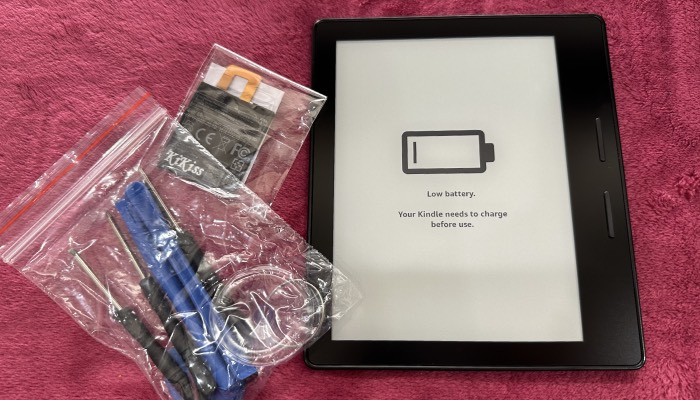
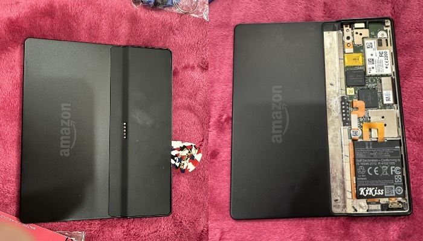
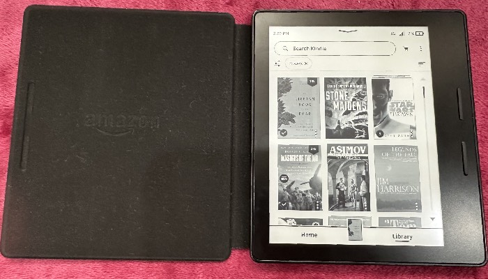

킨들 오아시스 1, 8세대라고 불리우던 처음 출시된모델이다.
오아시스의 최신모델이나 코보의 오아시스처럼 생긴 모델들, 최신컬러까지 구입해본결과
원래 책읽는 기능에 가장 충실한 기계가 가장좋다..라는 당연한 결론에 도달함.
여러개 갖고있던 오아시스 1중 배터리가 다되어서 저렴하게 판매하기도 했었는데 최근엔
알리에서 다양한 수리용배터리를 구입할 수 있는고로
최근 배터리 수명이 다한 녀석의 배를 따고 배터리를 교환해 줬다.

최근 아이팟 배따는 기술이 늘어서인지 비교적 간단하게 열었음..
적절한 도구와 힘이 필요하다 -_-

배터리 다시 넣은김에 사서 쌓아놓기만 하던 책들 하나씩 다시 읽기 시작해야겠음.
최근 아마존에서 오래된 킨들, 5세대까지 지원을 종료한다는 소리를 들었는데,
구형 킨들을 좋아하던 입장에서 아쉬운 느낌이 있고, 덕분에 옛날 킨들 다시 한번 사볼까? 하는 마음을 접게되었다.
본가 몇개 굴러다니던 킨들은 아마도 페이퍼화이트 3, 보야지 였던걸로 기억하니 영향이 없긴 할테고,
어차피 안드로이드 루팅된 기계들이라 이것도 지원이 종료될때까지 한정이겠지만 코리더를 사용한다거나,
컴퓨터에 킨들을 연결해서 직접파일을 넣어준다거나 하면 쓸수있긴함.
하긴 그러면 예전 기기들도 그냥 쓰면 되는건가..?
어쨋든, 이북리더라는 존재는 다양한 기능이 필요한게 아니라 책을 읽는다 라는
본연의 기능에 가장 충실한 녀석이 최고인것 같다.
엄마가 아직도 잘쓰고잇는 소위 누글3이라 불리는
루팅된 반스엔노블의 눅 글로우라이트 3이라는 녀셕도 있고.
아이팟을 쓰는 이유와 마찬가지로 편리함을 찾자면 핸드폰으로 보는게 가장 편함.